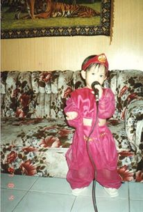

Roller Coaster Life
Since I was a child, I really love to sing. By the age of 2(they say), I could already sing One Moment In Time(ofcourse w/ babyish random words haha!). Here is a picture as proof. I think I was singing
A Whole New World that time because of my Alladin costume. 
I balanced my singing engagements and academics by joining school choir and singing contests. I am proud to say that our high school choir went to Thailand to compete for a choir competition.
I think I got my confidence through singing on stage infront of a lot of people, whether it be in a group or solo.  At present, I'm a college student at UPLB and I'm a member of my two beloved organizations: UPLB Economics Society(EconSoc) and Circle K Club of UPLB(CKI). If CKI is quite new to your ears, it is a socio-civic organization
dedicated to
At present, I'm a college student at UPLB and I'm a member of my two beloved organizations: UPLB Economics Society(EconSoc) and Circle K Club of UPLB(CKI). If CKI is quite new to your ears, it is a socio-civic organization
dedicated to
help kids throughout the country and the globe because we believe helping them also mean helping develop the world's future. These organizations helped and is helping be to become who I am and who I wanted to be in the future: a
career woman with a heart to help out to the community and enrich our today's and future's economy, for the betterment of everyone.
Here is how I see myself probably in the next five years. Dreaming big, aiming high. Not just for myself but also to our country.
Ofcourse I would also want my singing career to be on the side. ;) I wouldn't leave that. Haha! One of my dreams is also to become a total performer!